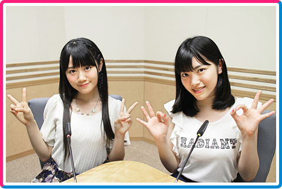

“ゆいかおりの実”はまだまだなったばかりのちっちゃな実。
唯ちゃんと夏織ちゃんが、声優として、ラジオパーソナリティとして、
２人で一緒にスキルアップを目指して頑張っていきます！
そんな２人は、自然とガールズトークに花が咲いちゃうほどの仲良しコンビ！
盛り上がり過ぎるとすぐに脱線しちゃう２人を、みんなのメールで止めてくださいね！
みんなで“ゆいかおりの実”を育てよう！
文化放送 毎週日曜日24：30～25：00
文化放送にて、毎週日曜24時30分からの30分間を、
ゆいかおりが占拠しちゃってます♪お楽しみに～♪
メール
ハガキ 〒105-8002 文化放送「ゆいかおりの実♪」
※番組内で流してほしい、ゆいかおり楽曲のリクエストも受付中！
メール・ハガキにタイトルを書いてくださいね☆
- ふつおたですよ～♪
ゆいかおりに話したいこと、聞いてみたいこと、何でもござれ！ -
世の中にあふれる、説明したいのにむずかしいぃ～言葉！名前が無ぁ～いアレやコレをゆい先生流の“あたらしいぃ～言葉”に生まれ変わらせるリ・ボーンプロジェクト！
簡単に説明できない「むずかしい言葉」やよく遭遇するのに「名前が無い現象」を募集してます！ゆい先生がピカっとひらめいて、あなたのモヤモヤを晴らしますよー！ - リスナーさんから寄せられた「対決」でゆいかおりが直接バトル！ 先に５回負けてしまった方が罰ゲームを執行！ サクっとできて夢中になっちゃう「バトルアイデア」を募集してます！
-
リスナーの皆さんから寄せられた「オリジナルクイズ」にクイズが大好きな(？)
夏織ちゃんが責任もって全力で挑むクイズバラエティ！
皆さんが考えた「渾身のクイズ」を募集してます！
※「真面目なクイズ」から「くだらないクイズ」まで何でも募集中！ - リスナーの皆さんから寄せられた「なんでも相談」に、21歳と23歳の大人ユニット「ゆいかおり」が、正面から真剣に向き合います！「棚からぼたもち」級のアドバイスに期待してください！！相談ゴト募集中です！
- 告知コーナーですよ♪
＊メールやハガキの件名に、どのコーナー宛てかをご記入の上、ご投稿ください。